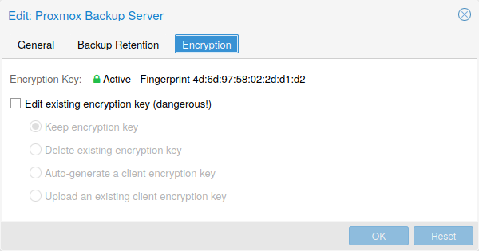

7. Proxmox VE 스토리지#
Proxmox VE 스토리지 모델은 매우 유연합니다. 가상 머신 이미지는 하나 또는 여러 개의 로컬 스토리지 또는 NFS 또는 iSCSI(NAS, SAN)와 같은 공유 스토리지에 저장할 수 있습니다. 제한이 없으며 원하는 만큼 스토리지 풀을 구성할 수 있습니다. 데비안 리눅스에서 사용 가능한 모든 스토리지 기술을 사용할 수 있습니다.
공유 스토리지에 VM을 저장할 때의 주요 이점 중 하나는 클러스터의 모든 노드가 VM 디스크 이미지에 직접 액세스할 수 있으므로 다운타임 없이 실행 중인 머신을 라이브 마이그레이션할 수 있다는 점입니다. 이 경우 VM 이미지 데이터를 복사할 필요가 없으므로 라이브 마이그레이션이 매우 빠릅니다.
스토리지 라이브러리(패키지 libpve-storage-perl)는 유연한 플러그인 시스템을 사용하여 모든 스토리지 유형에 공통 인터페이스를 제공합니다. 향후 추가 스토리지 유형을 포함하도록 쉽게 채택할 수 있습니다.
7.1. 스토리지 유형#
기본적으로 스토리지 유형에는 두 가지 클래스가 있습니다:
파일 수준 스토리지
파일 수준 기반 스토리지 기술을 사용하면 완전한 기능(POSIX) 파일 시스템에 액세스할 수 있습니다. 일반적으로 블록 수준 스토리지(아래 참조)보다 유연하며 모든 유형의 콘텐츠를 저장할 수 있습니다. ZFS는 가장 진보된 시스템으로 스냅샷과 클론을 완벽하게 지원합니다.
블록 레벨 스토리지
대용량 원본(raw) 이미지를 저장할 수 있습니다. 일반적으로 이러한 스토리지 유형에는 다른 파일(ISO, 백업 등)을 저장할 수 없습니다. 대부분의 최신 블록 레벨 스토리지 구현은 스냅샷과 클론을 지원합니다. RADOS와 GlusterFS는 분산 시스템으로, 스토리지 데이터를 다른 노드에 복제합니다.
 가능한 스토리지 유형
가능한 스토리지 유형
7.1.1. 씬 프로비저닝#
여러 스토리지와 QEMU 이미지 포맷인 qcow2는 씬 프로비저닝을 지원합니다. 씬 프로비저닝을 활성화하면 게스트 시스템이 실제로 사용하는 블록만 스토리지에 기록됩니다.
예를 들어 32GB 하드 디스크가 있는 VM을 생성하고 게스트 시스템 OS를 설치한 후 VM의 루트 파일 시스템에 3GB의 데이터가 포함되어 있다고 가정해 보겠습니다. 이 경우 게스트 VM에 32GB 하드 드라이브가 표시되더라도 스토리지에는 3GB만 기록됩니다. 이러한 방식으로 씬 프로비저닝을 사용하면 현재 사용 가능한 스토리지 블록보다 더 큰 디스크 이미지를 생성할 수 있습니다. VM을 위한 대용량 디스크 이미지를 생성하고 필요 시 VM의 파일 시스템 크기를 조정하지 않고도 스토리지에 디스크를 더 추가할 수 있습니다.
“스냅샷” 기능이 있는 모든 스토리지 유형은 씬 프로비저닝도 지원합니다.
스토리지가 가득 차면 해당 스토리지의 볼륨을 사용하는 모든 게스트에게 IO 오류가 발생합니다. 이로 인해 파일 시스템 불일치가 발생하고 데이터가 손상될 수 있습니다. 따라서 이러한 상황을 방지하기 위해 스토리지 리소스를 과도하게 프로비저닝하지 않거나 여유 공간을 주의 깊게 관찰하는 것이 좋습니다.
7.2. 스토리지 구성#
모든 Proxmox VE 관련 스토리지 구성은 /etc/pve/storage.cfg의 단일 텍스트 파일에 저장됩니다. 이 파일은 /etc/pve/ 내에 있으므로 모든 클러스터 노드에 자동으로 배포됩니다. 따라서 모든 노드가 동일한 스토리지 구성을 공유하게 됩니다.
스토리지 구성 공유는 모든 노드에서 동일한 “공유” 스토리지에 액세스할 수 있기 때문에 공유 스토리지에 적합합니다. 그러나 로컬 스토리지 유형에도 유용합니다. 이 경우 로컬 스토리지는 모든 노드에서 사용할 수 있지만 물리적으로 다르며 완전히 다른 콘텐츠를 가질 수 있습니다.
7.2.1. 스토리지 풀#
각 스토리지 풀에는
<유형>: <STORAGE_ID>
<프로퍼티> <값
<프로퍼티> <값
<property>
...
더 자세히 알아보려면 설치 후 기본 스토리지 구성을 살펴보세요. 여기에는 /var/lib/vz 디렉터리를 가리키며 항상 사용 가능한 local이라는 이름의 특수 로컬 스토리지 풀이 하나 포함되어 있습니다. 설치 시 선택한 스토리지 유형에 따라 Proxmox VE 설치 프로그램이 추가 스토리지 항목을 생성합니다.
 기본 스토리지 구성(/etc/pve/storage.cfg)
기본 스토리지 구성(/etc/pve/storage.cfg)
dir: local
path /var/lib/vz
content iso,vztmpl,backup
# default image store on LVM based installation
lvmthin: local-lvm
thinpool data
vgname pve
content rootdir,images
# default image store on ZFS based installation
zfspool: local-zfs
pool rpool/data
sparse
content images,rootdir
7.2.2. 일반적인 스토리지 속성#
몇 가지 스토리지 속성은 여러 스토리지 유형에서 공통적입니다.
nodes
이 스토리지를 사용할 수 있거나 액세스할 수 있는 클러스터 노드 이름 목록입니다. 이 속성을 사용하여 스토리지 액세스를 제한된 노드 집합으로 제한할 수 있습니다.
content
스토리지가 가상 디스크 이미지, cdrom iso 이미지, 컨테이너 템플릿 또는 컨테이너 root 디렉터리 등 여러 콘텐츠 유형을 지원할 수 있습니다. 모든 스토리지 유형이 모든 콘텐츠 유형을 지원하는 것은 아닙니다. 이 속성을 설정하여 이 스토리지가 사용되는 용도를 선택할 수 있습니다.
images : QEMU/KVM VM 이미지
rootdir : 컨테이너 데이터 저장
vztmpl : 컨테이너 템플릿
backup : 백업 파일(vzdump)
iso : ISO 이미지
snippets : 스니펫 파일(예: 게스트 후크 스크립트)
shared
모든 노드(또는 nodes 옵션에 나열된 모든 노드)에 동일한 콘텐츠가 있는 단일 저장소임을 나타냅니다. 다른 노드에서 로컬 스토리지의 콘텐츠에 자동으로 액세스할 수 있게 하는 것이 아니라 이미 공유된 스토리지를 그렇게 표시할 뿐입니다.
disable
이 플래그를 사용하면 스토리지를 완전히 비활성화할 수 있습니다.
maxfiles
더 이상 사용되지 않습니다. 대신 prune-backups를 사용하세요. VM당 최대 백업 파일 수입니다. 무제한의 경우 0을 사용합니다.
prune-backups
백업 보존 옵션입니다. 자세한 내용은 백업 보존을 참조하십시오.
format
기본 이미지 형식(raw|qcow2|vmdk)
preallocation
파일 기반 스토리지의 raw 및 qcow2 이미지에 대한 사전 할당 모드(off|metadata|falloc|full). 기본값은 metadata이며, raw 이미지의 경우 off로 처리됩니다. 네트워크 저장소를 대용량 qcow2 이미지와 함께 사용할 때는 off를 사용하면 시간 초과를 피하는 데 도움이 됩니다.
7.3. 볼륨#
당사는 스토리지 데이터에 특별한 표기법을 사용합니다. 스토리지 풀에서 데이터를 할당하면 이러한 볼륨 식별자가 반환됩니다. 볼륨은 <STORAGE_ID>와 그 뒤에 콜론으로 구분된 스토리지 유형에 따른 볼륨 이름으로 식별됩니다. 유효한 <VOLUME_ID>는 다음과 같습니다:
local:230/example-image.raw
local:iso/debian-501-amd64-netinst.iso
local:vztmpl/debian-5.0-joomla_1.5.9-1_i386.tar.gz
iscsi-storage:0.0.2.scsi-14f504e46494c4500494b5042546d2d646744372d31616d61 <VOLUME_ID>의 파일 시스템 경로를 가져오려면 다음을 사용합니다:
pvesm 경로 <VOLUME_ID>
7.3.1. 볼륨 소유권#
image 유형 볼륨에는 소유권 관계가 존재합니다. 이러한 각 볼륨은 VM 또는 컨테이너가 소유합니다. 예를 들어 local:230/example-image.raw 볼륨은 VM 230이 소유합니다. 대부분의 스토리지 백엔드는 이 소유권 정보를 볼륨 이름에 인코딩합니다.
VM 또는 컨테이너를 제거하면 시스템에서 해당 VM 또는 컨테이너가 소유한 모든 관련 볼륨도 제거됩니다.
7.4. 명령줄 인터페이스 사용#
스토리지 풀과 볼륨 식별자의 개념을 숙지하는 것이 좋지만, 실제로는 명령줄에서 이러한 낮은 수준의 작업을 수행할 필요는 없습니다. 일반적으로 볼륨 할당 및 제거는 VM 및 컨테이너 관리 도구에서 수행됩니다.
그럼에도 불구하고 일반적인 스토리지 관리 작업을 수행할 수 있는 pvesm(“Proxmox VE Storage Manager”)이라는 명령줄 도구가 있습니다.
7.4.1. 예시#
스토리지 풀 추가
pvesm add
<STORAGE_ID> pvesm add dir <STORAGE_ID> –path
pvesm add nfs <STORAGE_ID> –path
–server –export pvesm add lvm <STORAGE_ID> –vgname
pvesm add iscsi <STORAGE_ID> –portal <HOST[:PORT]> –target
스토리지 풀 비활성화
pvesm set <STORAGE_ID> –disable 1
스토리지 풀 활성화
pvesm set <STORAGE_ID> –disable 0
스토리지 옵션 변경/설정
pvesm set <STORAGE_ID>
pvesm set <STORAGE_ID> –shared 1
pvesm set local –format qcow2
pvesm set <STORAGE_ID> –content iso
스토리지 풀을 제거(데이터를 삭제하지 않으며, 연결을 끊거나 마운트 해제하지도 않습니다. 스토리지 구성만 제거합니다.)
pvesm remove <STORAGE_ID>
볼륨 할당
pvesm alloc <STORAGE_ID>
[–format <raw|qcow2>]
로컬 스토리지에 4G 볼륨을 할당(빈 문자열을
으로 전달하면 이름이 자동으로 생성됩니다.) pvesm alloc local
‘’ 4G
여유 볼륨
pvesm free <VOLUME_ID>
이렇게 하면 실제로 모든 볼륨 데이터가 삭제됩니다.스토리지 상태 나열
pvesm status
스토리지 콘텐츠 나열
pvesm list <STORAGE_ID> [–vmid
]
VMID로 할당된 볼륨 나열
pvesm list <STORAGE_ID> –vmid
ISO 이미지 나열
pvesm list <STORAGE_ID> –content iso
컨테이너 템플릿 나열
pvesm list <STORAGE_ID> –content vztmpl
볼륨의 파일 시스템 경로 표시
pvesm path <VOLUME_ID>
local:103/vm-103-disk-0.qcow2 볼륨을 파일 대상으로 내보내기.
(이것은 주로 내부적으로 pvesm 가져오기와 함께 사용됩니다. 스트림 형식 qcow2+size는 qcow2 형식과 다릅니다. 따라서 내보낸 파일을 단순히 VM에 첨부할 수 없습니다. 이는 다른 형식에도 적용됩니다.)pvesm export local:103/vm-103-disk-0.qcow2 qcow2+size target –with-snapshots 1
7.5. 디렉토리#
스토리지 풀 유형: dir
Proxmox VE는 로컬 디렉터리 또는 로컬에 마운트된 공유를 스토리지로 사용할 수 있습니다. 디렉터리는 파일 수준 스토리지이므로 가상 디스크 이미지, 컨테이너, 템플릿, ISO 이미지 또는 백업 파일과 같은 모든 콘텐츠 유형을 저장할 수 있습니다.
이 백엔드는 기본 디렉터리가 POSIX와 호환된다고 가정하지만 다른 것은 가정하지 않습니다. 즉, 스토리지 수준에서 스냅샷을 만들 수 없다는 뜻입니다. 그러나 해당 형식은 내부적으로 스냅샷을 지원하기 때문에 qcow2 파일 형식을 사용하는 VM 이미지에 대한 해결 방법이 있습니다.
미리 정의된 디렉토리 레이아웃을 사용하여 서로 다른 콘텐츠 유형을 서로 다른 하위 디렉터리에 저장합니다. 이 레이아웃은 모든 파일 수준 스토리지 백엔드에서 사용됩니다.
디렉토리 레이아웃
콘텐츠 유형 |
하위 디렉토리 |
|---|---|
VM 이미지 |
images/<VMID>/ |
ISO 이미지 |
template/iso/ |
컨테이너 템플릿 |
template/cache/ |
백업 파일 |
dump/ |
스니펫 파일 |
snippets/ |
7.5.1. 구성#
이 백엔드는 모든 일반적인 스토리지 속성을 지원하며 두 가지 속성을 추가합니다. path 속성은 디렉터리를 지정하는 데 사용됩니다. 파일 시스템의 절대 경로여야 합니다.
선택 사항인 content-dirs 속성을 사용하면 기본 레이아웃을 변경할 수 있습니다. 이 속성은 다음 형식의 쉼표로 구분된 식별자 목록으로 구성됩니다:
vtype=경로
여기서 vtype은 스토리지에 허용되는 콘텐츠 유형 중 하나이고, path는 스토리지의 마운트 지점을 기준으로 한 경로입니다.
구성 예(/etc/pve/storage.cfg)
dir: backup
path /mnt/backup
content backup
prune-backups keep-last=7
max-protected-backups 3
content-dirs backup=custom/backup/dir
위의 구성은 backup이라는 스토리지 풀을 정의합니다. 이 풀은 VM당 최대 7개의 일반 백업(keep-last=7)과 3개의 보호된 백업을 저장하는 데 사용할 수 있습니다. 백업 파일의 실제 경로는 /mnt/backup/custom/backup/dir/….입니다.
7.5.2. 파일 명명 규칙#
이 백엔드는 VM 이미지에 대해 잘 정의된 명명 체계를 사용합니다:
vm-\<VMID>-<NAME>.<FORMAT>
<VMID>
이것은 소유자 VM을 지정합니다.
<NAME>
공백이 없는 임의의 이름(ascii)일 수 있습니다. 백엔드에서는 기본적으로 disk-[N]을 사용하며, 여기서 [N]은 정수로 대체되어 이름을 고유하게 만듭니다.
<FORMAT>
이미지 포맷을 지정합니다(raw|qcow2|vmdk).
VM 템플릿을 생성하면 모든 VM 이미지의 이름이 읽기 전용임을 나타내기 위해 이름이 변경되며 복제본의 기본 이미지로 사용할 수 있습니다:
base-\<VMID>-<NAME>.<FORMAT>
7.5.3. 스토리지 기능#
위에서 언급했듯이 대부분의 파일 시스템은 기본적으로 스냅샷을 지원하지 않습니다. 이 문제를 해결하기 위해 이 백엔드는 qcow2 내부 스냅샷 기능을 사용할 수 있습니다.
클론에도 동일하게 적용됩니다. 백엔드는 qcow2 기본 이미지 기능을 사용하여 클론을 생성합니다.
백엔드 디렉터리에 대한 스토리지 기능
콘텐츠 유형 |
이미지 포맷 |
공유 |
스냅샷 |
클론 |
|---|---|---|---|---|
• images |
• raw |
no |
qcow2 |
qcow2 |
7.5.4. 예시#
다음 명령을 사용하여 로컬 스토리지에 4GB 이미지를 할당하세요:
# pvesm alloc local 100 vm-100-disk10.raw 4G
Formatting '/var/lib/vz/images/100/vm-100-disk10.raw', fmt=raw size=4294967296
successfully created 'local:100/vm-100-disk10.raw'
실제 파일 시스템 경로는 다음과 같이 표시됩니다:
# pvesm path local:100/vm-100-disk10.raw
/var/lib/vz/images/100/vm-100-disk10.raw
그리고 다음과 같이 이미지를 제거할 수 있습니다:
# pvesm free local:100/vm-100-disk10.raw
7.6. NFS#
스토리지 풀 유형: nfs
NFS 백엔드는 디렉터리 백엔드를 기반으로 하므로 대부분의 속성을 공유합니다. 디렉터리 레이아웃과 파일 명명 규칙은 동일합니다. 가장 큰 장점은 NFS 서버 속성을 직접 구성할 수 있으므로 백엔드에서 자동으로 공유를 마운트할 수 있다는 것입니다. /etc/fstab을 수정할 필요가 없습니다. 또한 백엔드는 서버가 온라인 상태인지 테스트할 수 있으며, 서버에 내보낸 공유를 쿼리하는 방법을 제공합니다.
7.6.1. 구성#
백엔드는 항상 설정되어 있는 공유 플래그를 제외한 모든 일반 스토리지 속성을 지원합니다. 또한 다음 속성을 사용하여 NFS 서버를 구성할 수 있습니다:
server
서버 IP 또는 DNS 이름. DNS 조회 지연을 방지하려면 일반적으로 매우 안정적인 DNS 서버가 있거나 로컬 /etc/hosts 파일에 서버를 나열하지 않는 한 DNS 이름 대신 IP 주소를 사용하는 것이 좋습니다.
export
NFS 내보내기 경로(pvesm nfsscan에 나열된 대로).
path
로컬 마운트 지점(기본값은 /mnt/pve/<STORAGE_ID>/).
content-dirs
기본 디렉터리 레이아웃에 대한 재정의이며, 선택 사항입니다.
options
NFS 마운트 옵션(man nfs 참조).
구성 예제(/etc/pve/storage.cfg)
nfs: iso-templates
path /mnt/pve/iso-templates
server 10.0.0.10
export /space/iso-templates
options vers=3,soft
content iso,vztmpl
7.6.2. 스토리지 기능#
NFS는 스냅샷을 지원하지 않지만 백엔드에서는 qcow2 기능을 사용하여 스냅샷 및 복제를 구현합니다.
백엔드 NFS의 스토리지 기능
콘텐츠 유형 |
이미지 포맷 |
공유 |
스냅샷 |
클론 |
|---|---|---|---|---|
• images |
• raw |
yes |
qcow2 |
qcow2 |
7.6.3. 예시#
다음을 사용하여 내보낸 NFS 공유 목록을 가져올 수 있습니다:
# pvesm nfsscan <server>
7.7. CIFS#
스토리지 풀 유형: cifs
CIFS 백엔드는 디렉토리 백엔드를 확장하므로 CIFS 마운트를 수동으로 설정할 필요가 없습니다. 이러한 스토리지는 서버 하트비트 확인 또는 내보낸 공유의 편리한 선택과 같은 모든 백엔드 이점과 함께 Proxmox VE API 또는 웹 UI를 통해 직접 추가할 수 있습니다.
7.7.1. 구성#
백엔드는 항상 설정되어 있는 공유 플래그를 제외한 모든 일반적인 스토리지 속성을 지원합니다. 또한 다음과 같은 CIFS 특수 속성을 사용할 수 있습니다:
server
서버 IP 또는 DNS 이름입니다.
필수항목입니다.
DNS 조회 지연을 방지하려면 일반적으로 매우 안정적인 DNS 서버가 있거나 로컬 /etc/hosts 파일에 서버를 나열하지 않는 한 DNS 이름 대신 IP 주소를 사용하는 것이 좋습니다.share
사용할 CIFS 공유(pvesm scan cifs 또는 웹 UI로 사용 가능한 공유를 가져옵니다).
필수항목입니다.
username
CIFS 스토리지의 사용자 이름입니다.
선택 사항이며 기본값은 ‘guest’입니다.
password
사용자 비밀번호입니다. 선택 사항입니다. root만 읽을 수 있는 파일(/etc/pve/priv/storage/
.pw )에 저장됩니다.
domain
이 스토리지의 사용자 도메인(작업 그룹)을 설정합니다.
선택 사항입니다.
smbversion
SMB 프로토콜 버전. 선택 사항이며 기본값은 3입니다. SMB1은 보안 문제로 인해 지원되지 않습니다.
path
로컬 마운트 지점.
선택 사항이며 기본값은 /mnt/pve/<STORAGE_ID>/입니다.
content-dirs
기본 디렉터리 레이아웃에 대한 재정의입니다.
선택 사항입니다.
options
추가 CIFS 마운트 옵션(man mount.cifs 참조). 일부 옵션은 자동으로 설정되므로 여기에서 설정하지 않아도 됩니다. Proxmox VE는 항상 옵션을 소프트 설정합니다. 구성에 따라 다음 옵션이 자동으로 설정됩니다: username, credentials, guest, domain, vers.
subdir
마운트할 공유의 하위 디렉터리입니다.
선택 사항이며 기본값은 공유의 루트 디렉터리입니다.
구성 예제(/etc/pve/storage.cfg)
cifs: backup
path /mnt/pve/backup
server 10.0.0.11
share VMData
content backup
options noserverino,echo_interval=30
username anna
smbversion 3
subdir /data
7.7.2. 스토리지 기능#
CIFS는 스토리지 수준에서 스냅샷을 지원하지 않습니다. 그러나 스냅샷 및 복제 기능을 계속 사용하려는 경우 qcow2 백업 파일을 사용할 수 있습니다.
백엔드 CIFS용 스토리지 기능
콘텐츠 유형 |
이미지 포맷 |
공유 |
스냅샷 |
클론 |
|---|---|---|---|---|
• images |
• raw |
yes |
qcow2 |
qcow2 |
예제#
다음을 사용하여 내보낸 CIFS 공유 목록을 가져올 수 있습니다:
# pvesm scan cifs <server> [--username <username>] [--password]
그런 다음 이 공유를 전체 Proxmox VE 클러스터에 스토리지로 추가할 수 있습니다:
# pvesm add cifs <storagename> --server <server> --share <share> [--username <username>] [--password]
7.8. Proxmox Backup Server#
스토리지 풀 유형: pbs
이 백엔드를 사용하면 다른 스토리지와 마찬가지로 Proxmox 백업 서버를 Proxmox VE에 직접 통합할 수 있습니다. Proxmox 백업 스토리지는 Proxmox VE API, CLI 또는 웹 인터페이스를 통해 직접 추가할 수 있습니다.
7.8.1. 구성#
백엔드는 항상 설정되어 있는 공유 플래그를 제외한 모든 일반 스토리지 속성을 지원합니다. 또한 다음과 같은 Proxmox 백업 서버의 특수 속성을 사용할 수 있습니다:
server
서버 IP 또는 DNS 이름입니다. 필수입니다.
port
기본 포트 대신 이 포트(예: 8007)를 사용합니다. 선택 사항입니다.
username
Proxmox 백업 서버 스토리지의 사용자 이름입니다. 필수입니다.
password
사용자 비밀번호입니다. 이 값은 루트 사용자로 액세스가 제한된 /etc/pve/priv/storage/
.pw 아래에 있는 파일에 저장됩니다. 필수입니다.
datastore
사용할 Proxmox 백업 서버 데이터스토어의 ID입니다. 필수.
fingerprint
Proxmox 백업 서버 API TLS 인증서의 지문입니다. 서버 대시보드에서 또는 proxmox-backup-manager cert info 명령을 사용하여 얻을 수 있습니다. 자체 서명된 인증서 또는 호스트가 서버 CA를 신뢰하지 않는 기타 인증서에 필요합니다.
encryption-key
클라이언트 측에서 백업 데이터를 암호화하기 위한 키입니다. 현재 비밀번호로 보호되지 않는(키 파생 함수(kdf) 없음) 키만 지원됩니다. 루트 사용자로 액세스가 제한된 /etc/pve/priv/storage/
.enc 아래에 파일에 저장됩니다. 매직 값 autogen을 사용하여 자동으로 새 키를 생성하려면 proxmox-backup-client key create –kdf none를 사용합니다. 선택 사항입니다.
master-pubkey
백업 작업의 일부로 백업 암호화 키를 암호화하는 데 사용되는 공개 RSA 키입니다. 루트 사용자로 액세스가 제한된 /etc/pve/priv/storage/
.master.pem 아래에 파일에 저장됩니다. 백업 암호화 키의 암호화된 사본이 각 백업에 추가되고 복구 목적으로 Proxmox 백업 서버 인스턴스에 저장됩니다. 선택 사항이며, 암호화 키(encryption-key)가 필요합니다.
구성 예제(/etc/pve/storage.cfg)
pbs: backup
datastore main
server enya.proxmox.com
content backup
fingerprint 09:54:ef:..snip..:88:af:47:fe:4c:3b:cf:8b:26:88:0b:4e:3c:b2
prune-backups keep-all=1
username archiver@pbs
encryption-key a9:ee:c8:02:13:..snip..:2d:53:2c:98
master-pubkey 1
7.8.2. 스토리지 기능#
Proxmox 백업 서버는 백업만 지원하며, 블록 수준 또는 파일 수준 기반일 수 있습니다. Proxmox VE는 가상 머신에는 블록 레벨을, 컨테이너에는 파일 레벨을 사용합니다.
백엔드 pbs의 스토리지 기능
콘텐츠 유형 |
이미지 포맷 |
공유 |
스냅샷 |
클론 |
|---|---|---|---|---|
• backup |
n/a |
yes |
n/a |
n/a |
7.8.3. 암호화#

선택적으로 GCM 모드에서 AES-256으로 클라이언트 측 암호화를 구성할 수 있습니다. 암호화는 웹 인터페이스를 통해 구성하거나 CLI에서 암호화 키 옵션을 사용하여 구성할 수 있습니다(위 참조). 키는 루트 사용자만 액세스할 수 있는 /etc/pve/priv/storage/
빠른 재해 복구를 위해 키를 안전하게 보관하되 쉽게 접근할 수 있는 곳에 보관하는 것이 좋습니다. 따라서 즉시 복구할 수 있는 비밀번호 관리자에 보관하는 것이 가장 좋습니다. 이에 대한 백업용으로 USB 플래시 드라이브에 키를 저장하여 안전한 곳에 보관하는 것도 좋습니다. 이렇게 하면 어떤 시스템과도 분리되어 있지만 비상 시에도 쉽게 복구할 수 있습니다. 마지막으로 최악의 경우를 대비하여 종이로 된 키 사본을 안전한 곳에 보관하는 것도 고려해야 합니다. paperkey 하위 명령을 사용하여 QR로 인코딩된 버전의 키를 만들 수 있습니다. 다음 명령은 paperkey 명령의 출력을 텍스트 파일로 전송하여 쉽게 인쇄할 수 있도록 합니다.
# proxmox-backup-client key paperkey /etc/pve/priv/storage/<STORAGE-ID>.enc --output-format text > qrkey.txt
또한, 키 복구 목적으로 단일 RSA 마스터 키 쌍을 사용할 수도 있습니다. 암호화된 백업을 수행하는 모든 클라이언트가 단일 공개 마스터 키를 사용하도록 구성하면 이후의 모든 암호화된 백업에 사용된 AES 암호화 키의 RSA 암호화 사본이 포함됩니다. 해당 비공개 마스터 키를 사용하면 클라이언트 시스템을 더 이상 사용할 수 없는 경우에도 AES 키를 복구하고 백업의 암호를 해독할 수 있습니다.
암호화는 클라이언트 측에서 관리되므로 암호화되지 않은 백업과 암호화된 백업이 서로 다른 키로 암호화되어 있어도 서버의 동일한 데이터스토어를 사용할 수 있습니다. 그러나 키가 다른 백업 간의 중복 제거는 불가능하므로 별도의 데이터스토어를 만드는 것이 더 좋습니다.
예시: CLI를 통해 스토리지 추가#
그런 다음 이 공유를 전체 Proxmox VE 클러스터에 스토리지로 추가할 수 있습니다:
# pvesm add pbs <id> --server <server> --datastore <datastore> --username <username> --fingerprint 00:B4:... --password
7.9. GlusterFS#
스토리지 풀 유형: glusterfs
GlusterFS는 확장 가능한 네트워크 파일 시스템입니다. 이 시스템은 모듈식 설계를 사용하며 상용 하드웨어에서 실행되며 저렴한 비용으로 고가용성 엔터프라이즈 스토리지를 제공할 수 있습니다. 이러한 시스템은 수 페타바이트까지 확장할 수 있으며 수천 명의 클라이언트를 처리할 수 있습니다.
7.9.1. 구성#
백엔드는 모든 일반적인 스토리지 속성을 지원하며 다음과 같은 GlusterFS 전용 옵션을 추가합니다:
server
GlusterFS 볼파일 서버 IP 또는 DNS 이름.
server2
백업 볼륨파일 서버 IP 또는 DNS 이름.
volume
GlusterFS 볼륨.
transport
GlusterFS 전송: tcp, unix 또는 rdma
구성 예제(/etc/pve/storage.cfg)
glusterfs: Gluster
server 10.2.3.4
server2 10.2.3.5
volume glustervol
content images,iso
7.9.2. 파일 명명 규칙#
디렉터리 레이아웃과 파일 명명 규칙은 dir 백엔드에서 상속됩니다.
7.9.3. 스토리지 기능#
스토리지는 파일 수준 인터페이스를 제공하지만 기본 스냅샷/복제 구현은 제공하지 않습니다.
백엔드 glusterfs의 스토리지 기능
콘텐츠 유형 |
이미지 포맷 |
공유 |
스냅샷 |
클론 |
|---|---|---|---|---|
• images |
• raw |
yes |
qcow2 |
qcow2 |
7.10. 로컬 ZFS 풀#
스토리지 풀 유형: zfspool
이 백엔드를 사용하면 로컬 ZFS 풀(또는 해당 풀 내부의 ZFS 파일 시스템)에 액세스할 수 있습니다.
7.10.1. 구성#
백엔드는 일반적인 스토리지 속성인 content, nodes, disable 및 다음과 같은 ZFS 특정 속성을 지원합니다:
pool
ZFS 풀/파일 시스템을 선택합니다. 모든 할당은 해당 풀 내에서 이루어집니다.
blocksize
ZFS 블록 크기 매개변수를 설정합니다.
sparse
ZFS 씬 프로비저닝을 사용합니다. 스파스 볼륨은 예약이 볼륨 크기와 같지 않은 볼륨입니다.
mountpoint
ZFS 풀/파일 시스템의 마운트 지점입니다. 이 값을 변경해도 ZFS 에서 보는 데이터 세트의 mountpoint 속성에는 영향을 주지 않습니다. 기본값은 /
입니다.
구성 예제(/etc/pve/storage.cfg)
zfspool: vmdata
pool tank/vmdata
content rootdir,images
sparse
7.10.2. 파일 명명 체계#
백엔드에서는 VM 이미지에 대해 다음과 같은 명명 체계를 사용합니다:
vm-<VMID>-<NAME> // 일반 VM 이미지
base-<VMID>-<NAME> // 템플릿 VM 이미지(읽기 전용)
subvol-<VMID>-<NAME> // 서브볼륨(컨테이너용 ZFS 파일 시스템)
소유자 VM을 지정합니다.
공백이 없는 임의의 이름( ascii)일 수 있습니다. 백엔드에서는 기본적으로 disk[N]을 사용하며, 여기서 [N]은 정수로 대체되어 이름을 고유하게 만듭니다.
7.10.3. 스토리지 기능#
ZFS는 스냅샷 및 복제와 관련하여 가장 진보된 스토리지 유형일 것입니다. 백엔드는 VM 이미지(포맷 raw)와 컨테이너 데이터(포맷 subvol) 모두에 ZFS 데이터세트를 사용합니다. ZFS 속성은 상위 데이터 세트에서 상속되므로 상위 데이터 세트의 기본값을 간단히 설정할 수 있습니다.
백엔드 zfs의 스토리지 기능
콘텐츠 유형 |
이미지 포맷 |
공유 |
스냅샷 |
클론 |
|---|---|---|---|---|
• images |
• raw |
no |
yes |
yes |
7.10.4. 예시#
VM 이미지를 저장하기 위해 별도의 ZFS 파일 시스템을 생성하는 것이 좋습니다:
# zfs create tank/vmdata
새로 할당된 파일 시스템에서 압축을 사용하도록 설정합니다:
# zfs set compression=on tank/vmdata
다음을 사용하여 사용 가능한 ZFS 파일 시스템 목록을 확인할 수 있습니다:
# pvesm zfsscan